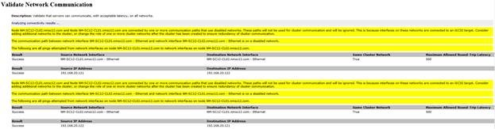
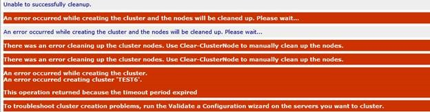
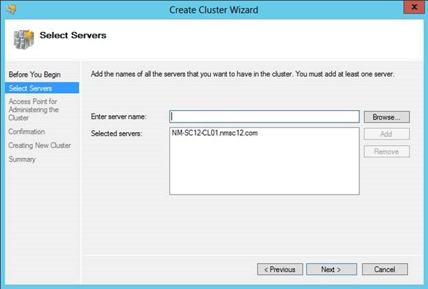
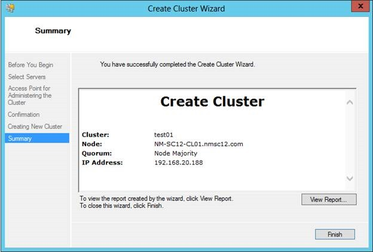
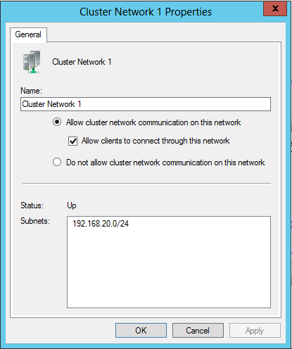
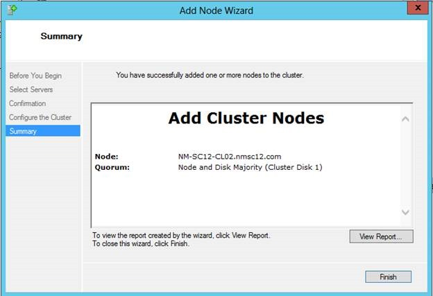

Unable to build a cluster when sharing the same network for iSCSI Storage
In this blog post we will look at an issue relating to sharing the same iSCSI Storage network for cluster communication. Looking at networking best practices for creating a Windows Server 2012 Failover Cluster, it is recommend that we separate iSCSI storage traffic from Cluster Communication. iSCSI needs to be on a separate dedicated network and it is not recommended to share iSCSI Storage Trafic & Network communication traffic.
At the time of cluster being created, it will automatically disable the network for cluster communication if it is used for iSCSI Storage traffic and this will cause the cluster creation to fail. I have seen that the cluster creation process fails if the same network is been shared for iSCSI Storage and also for Network Communication.
While running Cluster validation, you will notice that there’s a warning under networks stating that the network will be disabled for cluster use when it’s used for iSCSI storage.

If you ignore, and continue to build the cluster, you will notice that the cluster will not get installed and you will see following errors on the report.

Incase if you are trying this on a LAB environment, there’s a workaround which can be used to overcome this situation. However, it is highly recommend that you separate iSCSI Storage traffic from your network communication network when creating a cluster.
As I was trying this in my lab environment, let me explain how you could workaround this situation.
Step 01
Proceed to creating the cluster with a single node.

Step 02
You will notice that you are now able to build the cluster without getting an error.

Step 03
Before proceeding to add remaining nodes, verify that the network allows for Cluster Communication and it is not disabled.

Step 04
Upon verification, proceed and add remaining nodes in to the cluster. And you will be able to successfully add remaining nodes in to the cluster.

As mentioned earlier, please note that this is not a recommended configuration. However if you are using this on a LAB environment, this is a workaround for you to use the same network and build a cluster using Windows Server 2012 Failover Clustering.
More information relating to Networking Requirements for creating a cluster, please refer below mentioned link